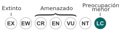

El guanaco (Lama guanicoe) es una especie de mamíefero artiodáctilo de la familia Camelidae propia de América del Sur. Es un animal salvaje. Es de huesos finos, con una altura aproximada de 1,60 metros y cerca de 91 kilogramos de peso¹. Los guanacos jóvenes son llamados chulengos.²
Su nombre priviene del quechua, wanaku³. Es uno de los pocos mamíferos que pueden beber agua salada sin ningún problema.
Guanaco

Estado de conservación
Preocupación menor (UICN)¹
Taxonomía
Filo: Chordata
Clase: Mammalia
Orden: Artiodactyla
Familia: Camelidae
Tribu: Lamini
Género: Lama
Especie: L. guanicoe
Guanaco en San Carlos, provincia de Mendoza (Argentina)
Taxonomía
Según la Lista Roja de la UICN se clasifica como una especie diferente, Lama guanicoe, con dos subespecies: Lama guanicoe cascsilensis o "guanaco peruano" y Lama guanicoe guanicoe o "guanaco sureño"; según Mammals Species of the World los guanacos corresponden a dos subespecies de Lama glama: Lama glama cascsilensis y Lama glama guanicoe.
Características
Al igual que la llama, (camélito doméstico que desciende del guanaco) el guanaco es un camélido que es incluso más escaso que la alpaca. Está revestido por un pelaje doble y gureso que lo protege.
Su altura a la cruz es de 1 a 1,2 m y, si se incluye la cabeza, entre 1,8 a 1,9 m. Los guanacos se caracterizan por ser los animales de mayor tamaño de Chile y la Patagonia. S peso es típicamente el doble que el de las vicuñas, alrededor de los 100kg. El guanaco puede correr a unos 64 km/h, también es un buen nadador y puede atravesar los arroyos de montañas.